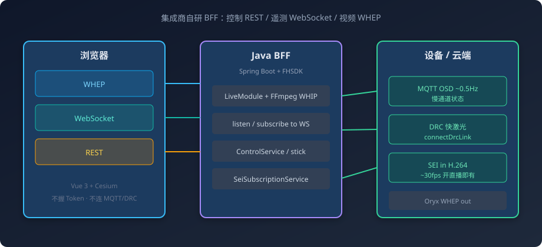
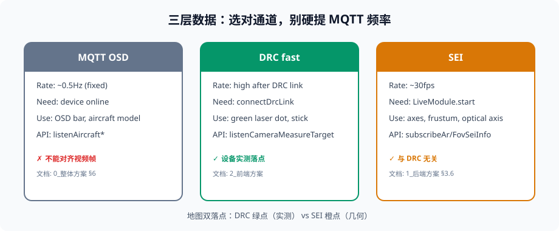
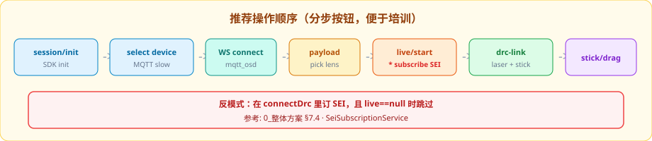
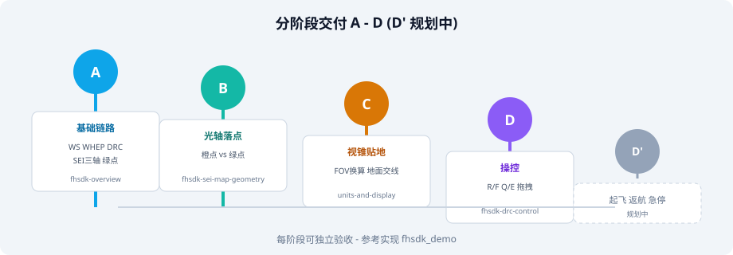
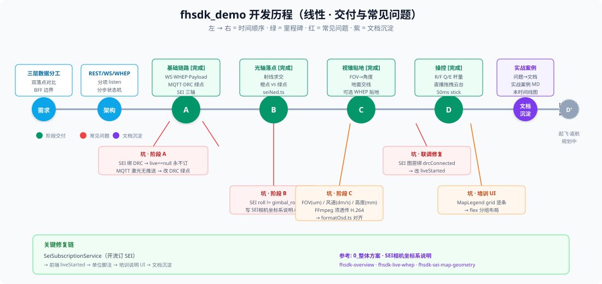
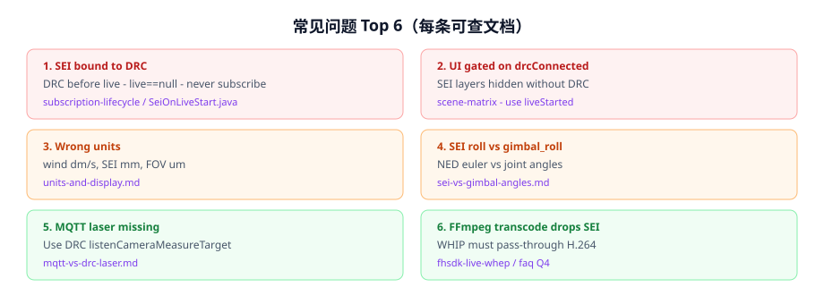
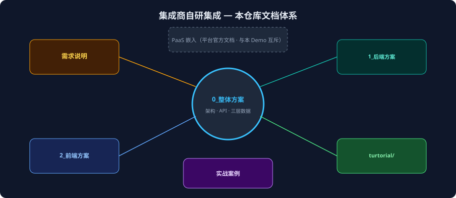

MQTT · DRC · SEI 三层数据 · Java BFF · Cesium 地图
与「SEI/OSD 概念培训」独立 · 记录 Demo 从需求到落地的过程
配套 Markdown：docs/case-study/集成商自研Demo实战案例.md
不嵌入平台驾驶舱 · 基于 FHSDK Java + 自研 Vue 页面
Demo 目标：证明 FHSDK Java 能支撑完整集成商驾驶舱能力，并提供可复制的参考实现
做什么 · 不做什么 · 分阶段验收 · 培训对比表
控制 REST · 遥测 WebSocket · 视频 WHEP — 三分离


口诀：对齐画面几何 → SEI · 实测激光 → DRC · 慢状态 → MQTT（勿提 MQTT 频率）

A 链路 → B 光轴 → C 视锥 → D 操控 → D′ 飞行任务

| 阶段 | 交付 | 参考文档 |
|---|---|---|
| A | WS·WHEP·MQTT·DRC 绿点·SEI 三轴 | 1_后端方案 · 0_整体方案 §6 |
| B | 光轴射线求交·橙点与绿点对比 | SEI相机坐标系说明 |
| C | 视锥地面交线·FOV μm 换算·可选贴地 | Cesium地图动态几何渲染说明 |
| D | R/F/Q/E 杆量·直播拖拽云台 | 2_前端方案 |
| D′ | 起飞·急停·返航（规划中） | 需求说明 §6 |
线性记录：需求 → 架构 → A～D 交付 → 常见问题 → 文档沉淀

绿 = 里程碑 · 红/橙 = 常见问题 · 紫 = 文档沉淀 · D′ 规划中
每条记录：现象 → 根因 → 修复 → 参考文档

connectDrc 里 subscribeArSeiInfo，且 live==null 时跳过SeiSubscriptionService，在 LiveService.startLive 成功后订阅liveStarted，断 DRC 不影响 SEI| 字段 | SDK 单位 | 常见误用 |
|---|---|---|
| windSpeed | dm/s | 当成 m/s 或 ÷10 |
| SEI altitude | mm | 当成米展示 |
| fovHorizontal | μm | 当成角度 ° |
| cameraRoll | NED 欧拉角 | 与 gimbal_roll 直接对比 |
按需求 → 方案 → 代码 对照阅读本仓库

docs/ 目录：需求说明 · 整体/前后端方案 · 教程 · 实战案例
另一条路：嵌入 PaaS 驾驶舱（见平台官方 PaaS 文档，与本 Demo 互斥选型）
快速启动：README → Oryx + mvn spring-boot:run + npm run dev
概念培训：平台官方 SEI/OSD 材料 — 概念与术语
实战案例：本文 + slides/index.html — 架构、阶段交付与常见问题
参考实现：本仓库 fhsdk_demo 工程
快速启动：根 README §首次配置 · §快速启动
← → 翻页 · Esc 全屏 · 2026